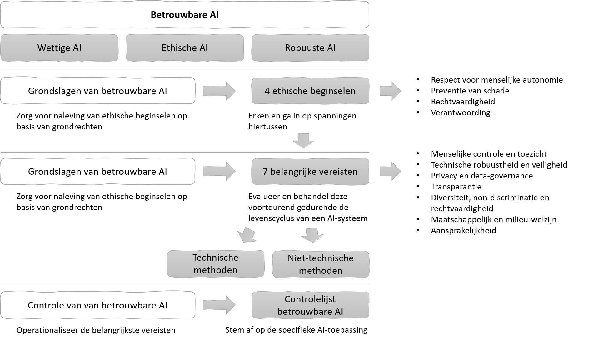

Aan de hand van de FAST-principes maken veel organisaties protocollen en standaarden voor eerlijk, verantwoord en transparant gebruik van AI. We leggen een aantal voorbeelden van zulke standaarden wat gedetailleerder uit om je een beeld te geven van de stand van zaken op dit gebied.
UNESCO: een standaard voor ethisch gebruik van AI op wereldschaal
Bekijk de onderstaande videoles UNESCO: Ethics of Science and Technology. De video is Engels gesproken, maar bevat Nederlandse ondertitels (die kun je aanzetten door rechtsonder Instellingen aan te klikken en te kiezen voor Ondertiteling Nederlands). In de videoles legt Peter-Paul Verbeek, hoogleraar Filosofie van de Technologie van de Universiteit Twente, de FAT-principes uit (opmerking: hij heeft Safety daar niet onder geschaard zoals wij wél doen) en vertelt hij hoe UNESCO aan de hand van die principes een standaard voor ethisch gebruik van AI op wereldschaal heeft ontworpen.
Vragen
Welke van de volgende uitspraken zijn waar, met betrekking tot de aanpak van ethische kwesties van AI? Kies 0 tot 4 opties.
Alle mensen moet worden geleerd hoe ze AI-systemen moeten bouwen.
AI kan een situatie van een internationaal conflict verergeren.
AI heeft het potentieel om nepnieuws te creëren maar ook te detecteren.
AI zal kunstenaars inhalen en de cultuur verrijken met alleen zijn eigen kunstcreaties.
antwoord
Alleen B en C zijn waar. A is onjuist, niet iedereen hoeft AI systemen te kunnen bouwen. D in onjuist, kunstenaars zouden onder meer ook met AI kunnen samenwerken.
Peter-Paul Verbeek noemt een aantal opeenvolgende maatschappelijke perioden: in welke zitten we volgens hem nu?
Society 1.0: jagers en verzamelaars
Society 2.0: landbouw
Society 3.0: de industriële revolutie
Society 4.0: het informatie-tijdperk
Society 5.0: de digitale maatschappij
Society 6.0: de virtuele maatschappij
antwoord
Society 5.0: de digitale maatschappij
In de discussie over ethiek in AI zijn er twee uitersten. Welke zijn dit, welke zit er tussen en welke wordt nog gemist?
antwoord
Peter-Paul Verbeek schetst de VS en China als uitersten. Het idee dat data toebehoort aan bedrijven die daar aan kunnen verdienen in de VS aan de ene kant en het idee dat alle data van de overheid is en kan worden gebruikt om de bevolking te controleren. Europa plaatst zich daar tussen met ethische-AI, waarin de mens centraal staat. Het hele Afrikaanse continent wordt nog helemaal niet vertegenwoordigd in deze discussie.
UNESCO richt zich op educatie, wetenschap en cultuur. Geef voor ieder van deze richtingen een voorbeeld uit de video over mogelijk invloed van AI.
antwoord
Educatie: Hoe zal ons leren worden beïnvloed door AI. Welke studierichtingen zijn nog nuttig als AI bepaalde beroepen overbodig maakt. Hoe kunnen we studenten een kritische houding t.o.v. AI aanleren.
Wetenschap: Hoe kan een wetenschapper uitkomsten deels gebaseerd op AI verklaren? Zeker als deze uitkomsten worden gebruikt in bestuurlijke beslissingen.
Cultuur: Hoe bewaken we de kleine talen als alles automatisch vertaald wordt? Hoe bewaren we culturele verschillen als AI ons naar een eenheidsworst stuurt? Hoe voorkomen we desinformatie?
Unesco neemt meer principes in ogenschouw dan FAST alleen. Welke principes zijn toegevoegd? Geef kort aan wat ze betekenen.
antwoord
inclusiviteit:AI moet iedereen bedienen en niemand uitsluiten.
bloeiend: Behalve het inperken van negatieve aspecten zouden er ook richtlijnen moeten komen hoe positieve AI te ontwikkelen.
bewustzijn: Mensen moeten zich bewust zijn van de invloed van AI-systemen op hun leven en onze samenleving.
goed bestuur: Overheden moeten kunnen uitleggen hoe ze AI hebben gebruikt in omgang met burgers (valt onder security)
democratie: AI moet gebaseerd zijn op democratische principes.
autonomie: AI mag nooit in strijd zijn met de menselijke autonomie.
Wat is de slogan waarmee UNESCO het belang van de geest in onze wereld centraal plaatst? Hoe past de kwestie Ethiek en AI binnen UNESCO?
antwoord
Aangezien oorlogen beginnen in de hoofden van mannen en vrouwen, zijn het ook de hoofden van mannen en vrouwen waarmee de verdediging van de vrede moet worden gebouwd.
Omdat veel belangrijk AI-toepassingen ons idee over de wereld kunnen beïnvloeden en dus onze geest zowel positief als negatief kunnen aanpassen is het van belang dat UNESCO richtingen aangeeft om deze negatieve effecten te voorkomen.
Europese Commissie: ethische richtlijnen voor AI
Zoals in de video van Peter-Paul Verbeek wordt verteld, vinden landen in Europa het belangrijk om aandacht te geven aan de eigenschappen van AI. In 2018 richtte de Europese Commissie een AI High Level Expert Group op, een groep van deskundigen op hoog niveau die richtlijnen opstelden voor goed gebruik van kunstmatige intelligentie. Die deskundigen vonden dat betrouwbare AI moet voldoen aan drie eisen. AI moet rechtmatig zijn, met inachtneming van alle toepasselijke wet- en regelgeving. Het moet ethisch gebruikt worden, met respect voor ethische principes en waarden. En AI systemen moeten robuust zijn, zowel vanuit technisch oogpunt als rekening houdend met de sociale omgeving. Als een hulpmiddel daarbij stelden zij ethische richtlijnen voor betrouwbare AI op, waarin zij de volgende zeven vereisten aan AI definieerden:
Menselijke controle en toezicht
Technische robuustheid en veiligheid
Privacy en gegevensbeheer (data-governance)
Transparantie
Diversiteit, non-discriminatie en eerlijkheid
Maatschappelijk en ecologisch welzijn
Verantwoording en aansprakelijkheid
Mede gebaseerd op die zeven vereisten aan betrouwbare AI stelde de Europese Commissie het onderstaande model op om te beoordelen in hoeverre een nog te bouwen AI-systeem betrouwbaar is:

Vragen
De Europese Commissie kiest bewust voor een zogenaamde ex ante beoordeling van AI-systemen, dat wil zeggen een voorafgaande check waarbij al tijdens het ontwerp wordt beoordeeld of een systeem voldoet aan de ethische richtlijnen. Waarom is het verstandig om zo'n beoordeling vooraf te doen in plaats van achteraf?
antwoord
Het aanpassen van een AI-systeem nadat het al gebouwd is kan erg duur en omslachtig zijn. Het is beter om al tijdens het maken van de systeemeisen (requirements) te beoordelen of die aansluiten op de ethische richtlijnen; dat voorkomt extra werk.
Plaats de lijst aan de rechterkant binnen de FAST principes. Welke passen bij de UNESCO aanvullingen? Welke zijn uniek?
antwoord
Binnen FAST: Transparantie (T) Verantwoording (A) Rechtvaardigheid (F) Diversiteit, niet discriminerend en rechtvaardigheid(F) Aansprakelijkheid (A), Technische robuustheid(S), Menselijke controle en toezicht (A en S).
Binnen UNESCO: respect voor menselijke autonomie, maatschappelijk en milieu-welzijn, privacy en data-governance.
Geen unieke principes.